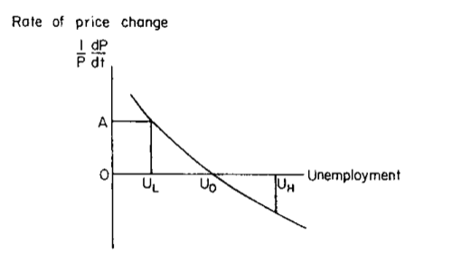

<!doctype html>
<html lang="en">

	<head>
		<meta charset="utf-8">

		<title>reveal.js - ClassHT 4</title>

		<link rel="stylesheet" href="plugin/reveal.css">
		<link rel="stylesheet" href="plugin/beige.css" id="theme">
        <link rel="stylesheet" href="plugin/monokai.css">
        <link rel="stylesheet" href="plugin/title-footer.css">
       
	</head>

	<body>

		<div class="reveal">

			<div class="slides">


                <!-- Slides are separated by three dashes (quick 'n dirty regular expression) -->
                <section data-markdown data-separator="\n---\n" data-separator-vertical="^\n--\n$">
                    <script type="text/template">
                        <!-- .slide: style="text-align: left;" -->
                        # History of Economic Analysis
                        ## Francesco Franco - Nova SBE
                        ### T1 2022 
                        ---

                        <!-- .slide: style="text-align: left;" -->
                        ### PART III

                        <center></center>

                        ---

                        <!-- .slide: style="text-align: left;" -->


                        ### Frank Ramsey

                        A contribution to theory of taxation 1927

                        > The problem I propose to tackle is this: a given revenue is to be raised
                        by proportionate taxes on some or all uses of income, the taxes of
                        different uses being possibly at different rates: **how should these rates
                        being adjusted in order that the decrement of utility may be minimum?**

                        > We denote by $u=F\left(x_{1},x_{n}\right)$ the net utility of producing
                        and consuming (or saving) these quantitites of commodities.
                        Suppose taxes are levied on the different commodities at a rate
                        $\lambda_{1},\lambda_{2},..,\lambda_{n}$\...

                        > I.e., $u$ is to be maximum subject to $\sum\lambda_{r}x_{r}=R$ (where
                        $\lambda_{r}$ is $\frac{\partial u}{\partial x_{r}}$)\...and so we have
                        `$$\begin{aligned}
                        \frac{\lambda_{1}}{\sum_{s}x_{s}\frac{\partial\lambda_{s}}{\partial x_{s}}} & =\frac{\lambda_{2}}{\sum_{s}x_{s}\frac{\partial\lambda_{s}}{\partial x_{d}}}=...=\frac{\lambda_{n}}{\sum_{s}x_{s}\frac{\partial\lambda_{s}}{\partial x_{n}}}\\
                        & =\frac{R}{\sum_{r}\sum_{s}\frac{\partial\lambda_{s}}{\partial x_{d}}x_{r}x_{s}}\end{aligned}$$`

                        > i.e **the production of each commodity should be diminished in the same
                        proportion**.

                        ---

                        <!-- .slide: style="text-align: left;" -->


                       
                        > I shall assume the utility is a non-homogeneous quadratic function\...The taxes should be such as to dimish the production of all commodities
                        in the same direction. And this result is now valid for an infinitesimal
                        revenue but for any revenue which it is possible to raise at all.

                        > We can now consider the more general problem: a given revenue is to be
                        raised by means of fixed taxes $\mu_{1}...\mu_{n}$ on $m$ commodities
                        and by taxes to be chosen at discretion on the remainder.

                        > First suppose that all commodities are independent and have their own
                        supply an demand equations\...hence if we denote by $\rho_r$ and $\epsilon_r$
                        the elasticities od demand and supply...
                        $$\mu_{r}=\frac{\left(\frac{1}{\epsilon_{r}}+\frac{1}{\rho_{r}}\right)\theta}{1-\frac{\theta}{\rho_{r}}}$$
                        
                        > For infinitesimal taxes...
                        `$$\frac{\mu_{1}}{\frac{1}{\epsilon_{1}}+\frac{1}{\rho_{1}}}=...\frac{\mu_{n}}{\frac{1}{\epsilon_{n}}+\frac{1}{\rho_{n}}}$$`
                         i.e. the tax ad valorem on each commodity should be proportional to the
                        sum of the reciprocals ot its supply and demand elasticities

                        > \....If any one commodity is absolutely inelastic, either for supply or
                        for demand, the whole of the revenue should be collected off it.

                        ---

                        <!-- .slide: style="text-align: left;" -->


                        A Mathematical Theory of Saving 1928

                        > The first problem I propose to tackle is this: **how much of its income
                        should a nation save?**\...

                        > The rate of saving multiplied by the marginal utility of money should
                        always be equal to the amount by which the total net rate of enjoyment of
                        utility falls short of the maximum possible rate of enjoyment.

                        > \...various simplifying assumptions: we have to suppose that our
                        community goes on for ever without changing either in numbers or in its
                        capacity for enjoyment or on its aversion to labour; can be
                        calculated\...and added\...no new invention\...

                        > \...it is assumed that **we do not discount later enjoyments in comparison
                        with earlier ones, a practive which is ethically indefensible and arises
                        merely from the weakness of the imagination**; we shall however in Section
                        II include such a rate of discount in some of our investigations.

                        ---

                        <!-- .slide: style="text-align: left;" -->


                        A Mathematical Theory of Saving 1928


                        > Let us then denote by $x(t)$ and $a(t)$ the total rates of consumption
                        and labour of our community and by $c(t)$ it capital at time $t$. Its
                        income is taken to be a general function of the amount of labour and
                        capital, and will be called $f(a,c)$;\...
                        $$\frac{dc}{dt}+x=f\left(a,c\right)$$

                        > Now let us denote by $U(x)$ the total rate of consumption $x$, and by
                        $V(a)$ the total rate of disutility of a rate of labour $a$; and the
                        corresponding marginal rates we will call $u(x)$ and $v(a)$;

                        > The first of these comes from equating the marginal disutility of labour
                        at any time to the product of the marginal efficiency of labour by the
                        marginal utility of consumption at that time
                        $$v(a)=\frac{\partial f}{\partial a}u(x)$$

                        ---

                        <!-- .slide: style="text-align: left;" -->


                        A Mathematical Theory of Saving 1928

                        > The second equates the advantage of an increment $\Delta x$ of
                        consumption at time $t$, to that derived by postponning it for an
                        infinitesimal period $\Delta t$, which will increase its amount to
                        $\Delta x\left(1+\frac{\partial f}{\partial c}\Delta t\right)$since
                        $\frac{\partial f}{\partial c}$ gives the rate of interest earned by
                        waiting\...or in the limit
                        $$\frac{d}{dt}u\left(x\left(t\right)\right)=-\frac{\partial f}{\partial c}u\left(x\left(t\right)\right)$$

                        > Mr. Keynes ... has shown me that this result can also be obtained by the following simpple reasoning.
                        Suppose that in a year we ought to spen x and save z. Then the advantage to be gained
                        from an extra 1 spent is $u(x)$, the marginal utility of money, and this must be equated
                        to the sacrifice imposed by saving 1 less.

                        > Equations (1),(2) and (3) are sufficient to solve our problem provided we
                        know $c_{0}$, the given capital with whioch the nation starts at $t=0$ ,
                        the other "initial condition" being supplied by considerations as to the
                        behavior of the function as $t\rightarrow\infty$.

                        ---

                        <!-- .slide: style="text-align: left;" -->


                        A Mathematical Theory of Saving 1928

                        > In assuming the rate of discount constant\....$\rho$\...
                        `$$\frac{d}{dt}u\left(x\left(t\right)\right)=-u\left(x\left(t\right)\right)\left\{ \frac{\partial f}{\partial c}-\rho\right\}$$`

                        >  \...Then in a state of equilibrium there will be no saving and
                        $$\frac{\partial f}{\partial c}=\rho$$

                        ---

                        <!-- .slide: style="text-align: left;" -->


                        A Mathematical Theory of Saving 1928
                        
                        > \...different people discount future utility at different rates, and,
                        quite apart from the time factor, are not so interested in their heirs
                        as in themselves.

                        > Let us suppose that they are not concerned with their heirs at all; that
                        each man is charged with a share of the maintenance of such children as
                        are necessary to maintain the population, but **starts his working life
                        without any capital and ends it without any, having spent his savings on
                        an annuity**; that within his own lifetime he has a constant utility
                        schedule for consumption and discounts future utility at a constant
                        rate, but that this rate may be supposed different for different people.

                        > When such a community is in equilibrium, the rate of interest must, of
                        course, equal the demand price of capital at
                        $\frac{\partial f}{\partial c}$. And it will also equal the 'supply
                        price', which arises in the following way. Suppose that the rate of
                        interest is constant and equal to $r$, and that the rate of discount for
                        a given individual is $\rho$. Then if $r>\rho$, he will save when he is
                        young, not only to provide for loss of earning power in old age, but
                        also because he can get more pounds to spend at a later date for those
                        he forgoes spending now. If we neglect variations in his earning power,
                        his action can be calculated by modifying the equations of lIc to apply
                        to a finite life as in IIb. He will for a time accumulate capital, and
                        then spend it before he dies. Besides this man, we must suppose there to
                        be in our community other men, exactly like him except for being born at
                        different times. The total capital possessed by $n$ men of this sort whose
                        birthdays are spread evenly through the period of a lifetime will be $n$
                        times the average capital possessed by each in the course of his life.
                        The class of men of this sort will, therefore, possess a constant
                        capital depending on the rate of interest, and this will be the amount
                        of capital supplied by them at that price. (If $\rho>r$, it may be
                        negative, as they may borrow when young and pay back when old). We can
                        then obtain the total supply curve of capital by adding together the
                        supplies provided at a given price by each class of individual.

                        ---

                        <!-- .slide: style="text-align: left;" -->

                        ## Economics II (Incomplete Notes)


                        <!-- .slide: style="text-align: left;" -->

                        ### John R. Hicks 1904-1989 (Nobel 1972)

                        CONTRIBUTIONS
                        
                        - the elasticity of substitution 
                        
                        > An increase in the supply of any factor will increase its relative
                        > share (i.e., its proportion of the National Dividend) if its
                        > "elasticity of substitution" is greater than unity. This is the new
                        > rule, involving a new definition. The elasticity of substitution" is a
                        > measure of the ease with -which the varying factor can be substituted
                        > for others.
                        
                        - Technological progress, biased or not, K stock
                        
                        - Value and Capital 1939: unity and coherence within the theoretical literature.
                        
                        - Compensated demand

                        - IS-LM model

                        ---

                        <!-- .slide: style="text-align: left;" -->

                        ### Paul A. Samuelson 1915-2009 (Nobel 1970)
                        
                        > \...the role of maximum principles in natural science, the plumb-line
                        > trajectory of a falling apple and the elliptical orbit of a wandering
                        > planet may be capable of being described by the optimizing solution
                        > for a specifiable programming problem\....to say "Galileo's ball rolls
                        > down the inclined plane as if to minimize the integral of action, or
                        > to minimize Hamilton's integral," does prove to be useful to the
                        > observing physicists, eager to formulate predictable uniformities of
                        > nature. \...Often the physicist gets a better, a more economical,
                        > description of nature if he is able to formulate the observed laws by
                        > a maximum principle. **Often the economist is able to get a better, a
                        > more economical, description of economic behaviour from the same
                        > device**\...Newton's falling apple can be described in either of two
                        > ways: its acceleration toward the earth is a constant; or its position
                        > as a function of time follows that arc which minimizes the integral,
                        > taken from its moment of release to the terminal time at which it is
                        > observed, of an integrand which can be written as the square of its
                        > instantaneous velocity minus a linear function of its position.
                        > $$\delta\int_{0}^{T}\left(\frac{1}{2}\dot{x}-gx\right)dt=0$$ is not
                        > less simple than $\ddot{x}=-g$

                        ---

                        <!-- .slide: style="text-align: left;" -->

                        CONTRIBUTIONS
                        
                        - clarify which hypotheses about demand follow from the postulate of
                        uyility maximization: **revealed preferences** Weak Axiom.
                        The principle of revealed preference is the backbone of
                        structural empirical work on consumer demand. It focuses on what we can
                        learn about the processes by which economic agents make decisions, using
                        observed choices and minimal auxiliary assumptions.
                        
                        > If a bundle $x^{0}$ was purchased at prices $p^{0}$ when a different
                        bundle $x^{1}$ could have been afforded (i.e., if
                        $p^{0}x^{0}\geqq p^{0}x^{1}$and $x^{1}\neq x^{0}$), so that $x^{0}$ is
                        revealed preferred to $x^{1}$, then if $p^{1}$ is a price vector at
                        which $x^{1}$ is purchased, $x^{1}$ must not also be revealed preferred
                        to $x^{0}$; hence we must have $p^{1}x^{1}< p^{1}x^{0}$. 

                        ---

                        <!-- .slide: style="text-align: left;" -->

                        CONTRIBUTIONS
                        
                        - Welfare
                        
                        - the interaction of the accelerator and the multiplier
                        
                        - the pure theory of international trade: Stolper Samuelson
                        
                        - OLG
                        
                        - Public good, definition

                        - Financial economics
                        
                        - neoclassical synthesis

                        ---

                        <!-- .slide: style="text-align: left;" -->

                        ### John Von Neumann 1903-1957

                        CONTRIBUTIONS
                        
                        The theory of convex sets (Real Analysis) which will be used for existence of eqbm in
                        competitive economy and reformulate consumer and producer theory.
                        
                        The Theory of games and Economic behavior
                        
                        > We have stated already in 2.1.1 in what way we wish to describe the
                        > fundamental concept of individual preferences by the use of rather far
                        > reaching notion of utility. Many economists will feel that we are
                        > assuming far too much and that our standpoint is a retrogression from
                        > the more cautious modern technique of indifference curves.


                        
                        Let $X$ be a consumption set, namely the set of all alternatives the
                        consumer can conceive, with $x_{i}$ the number of units of good $i$. The
                        requirements on $X$ are that 1. $X\subseteq\mathbb{R}_{+}^{n}$, 2. $X$
                        is closed , 3. $X$ is convex.4. $0\in X$.
                        
                        Imposing some properties on a preference relation such as
                        
                        -   Completeness: for all $x^{1}$ and $x^{2}$ in $X$ either
                            $x^{1}\gtrsim x^{2}$ or $x^{2}\gtrsim x^{1}$.
                        
                        -   Transitivity: For any three elements $x^{1},x^{2}$ and $x^{3}$in $X$
                            if $x^{1}\gtrsim x^{2}$ and $x^{2}\gtrsim x^{3}$ then
                            $x^{1}\gtrsim x^{3}$
                        
                        -   Continuity, Monotonicity
                        
                        They imply that there is a real valued function $u(x)$ (utility) that
                        represents these preferences. (Wold, Debreu)

                        ---

                        <!-- .slide: style="text-align: left;" -->

                        EXPECTED UTILITY
                        
                        Von Neumann interpreted $X$ as outcomes $a_{i}$ (gambles) that had a
                        probability $p$, with two more axioms
                        
                        -   Substitution, Reduction to simple gambles
                        
                        He proved that there exists an expected utility
                        $$u(x)=\sum_{i=1}^{n}p_{i}u\left(a_{i}\right)$$

                        ---

                        <!-- .slide: style="text-align: left;" -->

                        USEFULNESS OF REAL ANALYSIS

                        Example of how to prove existence in this framework. Brouwer's fixed
                        point theorem
                        
                        > Recall that a set of points is said to be compact if it is closed and
                        bounded and to be convex if every line segment joining two points of the
                        set lies entirely within the set. Let $C$ be a compact convex set. Let
                        $f(x)$ be a vector function which assigns to every point of $C$ a point
                        of $C$. Then Brouwer's theorem asserts that if the mapping $f(x)$ is
                        continuous, then there is at least one point, `$x^{*}$`, which is mapped
                        into itself, i.e., for which `$f(x^{*})=x^{*}$`.

                        ---

                        <!-- .slide: style="text-align: left;" -->

                        GAMES
                        
                        Zero sum games
                        
                          |           |$b_{1}$   |  $b_{2}$  |
                          |---------  |--------- | --------- |
                          | $a_{1}$   | -1,1     | 2,-2      |
                          | $a_{2}$   |  0,0     | 3,-3      |
                        
                        Players will choose the strategy that makes is minimal gain as large as
                        possible. ($\max\min)$ in this case $a_{2},b_{1}$ which is an
                        equilibrium as no one wants to deviate from this strategy.

                        ---

                        <!-- .slide: style="text-align: left;" -->

                        
                        #### John Nash 1928-2015 (Nobel 1994)
                        
                        Nash Equilibrium, a joint strategy is a Nash equilibrium as along as
                        each individual, while fully aware of the other's behavior, has no
                        incentive to change its own.
                        
                        Prisonner's dilemma

                        |           |$b_{1}$   |  $b_{2}$  |
                          |---------  |--------- | --------- |
                          | $a_{1}$   | 5,5      | 2,10      |
                          | $a_{2}$   |  10,2     | 3,3      |
                        

                        ---

                        <!-- .slide: style="text-align: left;" -->
   
                        ### Kenneth Arrow 1921-2017 (Nobel 1972)
                        

                        CONTRIBUTIONS

                        - General Equilibrium (with Gerard Debreu)
                        
                            - First welfare Theorem: CE is PE                 
                            - Second Welfare Theorem: a PE is a CE with a given T
                            - Existence
                            - Sequential eqbm
                        
                        - Social Choice - impossibility theorem

                        - Learning by doing -> Endogenous Growth models

                        - Asymmetric information -> Akerlof, Spence, Stiglitz


                        ---

                        <!-- .slide: style="text-align: left;" -->

                        
                        ### Milton Friedman 1912-2006 (Nobel 1976)

                        The Permanent Income Hypothesis

                        > Keynes took it for granted that current consumption expenditure is a
                        > highly dependable and stable function of current income---.that the
                        > amount of aggregate consumption mainly depends on the amount of
                        > aggregate income (both measured in terms of wage units). He termed it
                        > a fundamental psychological rule of any modern community that, when
                        > its real income is increased, it will not increase its consumption by
                        > an equal absolute amount.

                        <center></center>

                        ---

                        <!-- .slide: style="text-align: left;" -->

                        
                
                        The Permanent Income Hypothesis

                        >
                        > Let $R_{1}$ and $R_{2}$ be the consumer unit's expected receipts in
                        > year 1 and 2 respectively, and $i$ the interest rate. The maximum
                        > amount the unit can spend in year 1 if it spends nothing in year 2 is
                        > $R_{1}+[R_{2}/(1+i)]$, that is, its receipts in year 1 plus the
                        > maximum loan it can repay with its receipts in year 2. The maximum
                        > amount it can spend in year 2 if it spends nothing in year 1 is
                        > $R_{1}(1+i)+R_{2}$\...
                        >
                        > Changes in $R_{1}$ and $R_{2}$ affect consumption in year 1 only
                        > through their effect on what we may term the consumer unit's wealth in
                        > year 1, or $$W_{1}=R_{1}+\frac{R_{2}}{1+i}.$$

                        ---

                        <!-- .slide: style="text-align: left;" -->

                        
                        The Permanent Income Hypothesis
                        
                        > One way, already suggested, is to take $W_{1}$ and $i$ as the two
                        > variables and to write the consumption function as
                        > $$c_{1}=f\left(W_{1},i\right).$$
                        >
                        > savings are then given by
                        > $$s_{1}=R_{1}-c_{1}=R_{1}-f\left(W_{1},i\right)$$
                        >
                        > The designation of current receipts as income in statistical studies
                        > is an expedient enforced by limitations of data\...In the simple
                        > example considered here, $W_{1}$ is the consumer unit's wealth in year
                        > 1 and $iW_{1}$, its income in this sense for year 1.
                        
                        ---

                        <!-- .slide: style="text-align: left;" -->

                        
                        The Permanent Income Hypothesis

                        > Let us use the terms **permanent income** and permanent consumption to
                        > refer to the concepts relevant to the theoretical analysis, so as to
                        > avoid confusion with the frequent usage of income as synonymous with
                        > current receipts\...For indifference curves satisfying these
                        > assumptions, the consumption function defined by (2.4) assumes a
                        > particularly simple form, namely,
                        > $$c_{p,1}=k\left(i,u\right)y_{p,1}=k\left(i,u\right)iW_{1}$$ where the
                        > function has been written so that it can be regarded as applying to an
                        > indefinitely long horizon, and not to two years. While $k$ does not
                        > depend on the level of wealth or permanent income; it obviously does
                        > depend on the interest rate. It also depends on. any factors that
                        > determine the shape of the indifference curves, symbolized in (2.5) by
                        > the variable $u$ (for utility factors)
                        
                        ---

                        <!-- .slide: style="text-align: left;" -->

                        
                        The Permanent Income Hypothesis

                        > The introduction of **uncertainty adds a new reason for holding wealth**
                        > to the two motives present under certainty---straightening out the
                        > consumption stream and earning interest. This new motive is the
                        > availability of a **reserve for emergencies**---for unexpectedly low
                        > receipts, on the one hand, or unexpectedly high levels of consumption
                        > on the other\...This effect of uncertainty therefore, like the other,
                        > establishes no presumption against the form assigned to the
                        > consumption function in (2.5). It requires only that the ratio of
                        > nonhuman wealth to. income be included as a variable determining $k$,
                        > the ratio of consumption to permanent income
                        > $$c_{p}=k\left(i,w,u\right)y_{p}=k\left(i,w,u\right)iW$$ where $w$
                        > stands for the ratio of nonhuman wealth to permanent income\...
                        

                        ---

                        <!-- .slide: style="text-align: left;" -->

                        
                        The Permanent Income Hypothesis

                        > **Aggregate consumption depends therefore not only on the precise form
                        > of equation (2.6) but also on the distribution of consumer units by
                        > these variables**\....Then aggregate consumption is
                        > $$c_{p}^{*}=\int\int\int\int f\left(i,w,u,y_{p}\right)k\left(i,w,u\right)y_{p}didwdudy_{p}$$
                        


                        > The magnitudes termed permanent income and permanent consumption that
                        > play such a critical role in the theoretical analysis cannot be
                        > observed directly for any individual consumer unit. The most that can
                        > be observed are actual receipts and expenditures during some finite
                        > period, supplemented, perhaps, by some verbal statements about
                        > expectations for the future. The theoretical constructs are ex ante
                        > magnitudes; the empirical data are ex post. Yet **in order to use the
                        > theoretical analysis to interpret empirical data, a correspondence
                        > must be established between the theoretical constructs and the
                        > observed magnitudes.**


                        
                        > **But even when they are carried as far as is at all feasible, the
                        > resulting magnitudes, interpreted as estimates of permanent income and
                        > permanent consumption, are not consistent with equation** (2.6)\...We
                        > are thus driven either to reject equation (2.6), which is what earlier
                        > workers have done, or to resort to more indirect means of establishing
                        > a correspondence between the theoretical constructs and the observed
                        > magnitudes, which is what I propose to do; One indirect means is to
                        > use evidence for other time periods and other consumer units to
                        > interpret data for one consumer unit for one period.
                        

                        ---

                        <!-- .slide: style="text-align: left;" -->

                        
                        The Permanent Income Hypothesis

                        > In its most general form our hypothesis about, the consumption
                        > function, which we shall hereafter refer to as the permanent income
                        > hypothesis, is given by the three equations
                        > $$c_{p}=k\left(i,w,u\right)y_{p}$$ $$y=y_{p}+y_{t}$$ $$c=c_{p}+c_{t}$$
                        >
                        > \... $$\rho_{y_{t}y_{p}}=\rho_{c_{t}c_{p}}=\rho_{y_{t}c_{t}}=0$$ \...
                        >
                        > Suppose we have observations on consumption and income for a number of
                        > consumer units, for all of whom the $k$ of equation (2.6) can be taken
                        > to be numerically the same. Let us proceed, as is usually done in
                        > family budget studies, to estimate from these data a relation between
                        > consumption and income. For simplicity, let the relation to be
                        > estimated be linear, say: $$c=\alpha+\beta y$$

                        ---

                        <!-- .slide: style="text-align: left;" -->

                        
                        The Permanent Income Hypothesis
                        
                        > \...The least squares estimates of $\alpha$ and $\beta$ (call these
                        > $a$ and $b$)\...are
                        > $$b=\frac{\sum\left(c-\bar{c}\right)\left(y-\bar{y}\right)}{\sum\left(y-\bar{y}\right)^{2}}$$
                        > $$a=\bar{c}-b\bar{y}$$ \...
                        > `$$b=k\frac{\sum\left(y_{p}-\bar{y}_{p}\right)^{2}}{\sum\left(y-\bar{y}\right)^{2}}=kP_{y}$$`
                        

                        ---

                        <!-- .slide: style="text-align: left;" -->

                        
                        The Permanent Income Hypothesis

                        > \...Our hypothesis gives a major role to certain features of the
                        > income distribution generally neglected in consumption studies. **It
                        > asserts' that some of the most strikingly uniform characteristics of
                        > computed regressions between consumption and income are simply a
                        > reflection of the inadequacy of measured income as an indicator of
                        > long-run intome status.** In consequence, differences among various
                        > groups of consumer units in observed marginal propensities to consume
                        > may not reflect differences in underlying preferences for consumption
                        > and wealth at all; they may reflect primarily the different strength
                        > of random forces, including errors of measurement, in determining
                        > measured income.
                        


                        ---

                        <!-- .slide: style="text-align: left;" -->

                        
                        

                        Optimum Quantity Theory of Money
                        
                        > In order for competitive equilibrium in a monetary economy to result
                        > in an efficient allocation of resources, it is necessary that the
                        > nominal rate of interest be zero, or at any rate (in the case of
                        > stochastic returns on some assets) that there be no asset whose
                        > nominal yield is always non-negative and sometimes positive, so that
                        > the returns to this asset strictly dominate the return to holding
                        > money.
                        >
                        > The best monetary policy, from the point of view of maximizing the
                        > welfare of consumers (the welfare of some representative consumer or,
                        > presumably, some measure of average welfare in the ease of
                        > heterogeneous consumers), would be to maintain a rate of growth of the
                        > money supply that is so low (quite likely invoiving steady contraction
                        > of the money supply) as to make the nominal interest rate (on assets
                        > with a riskless nominal return, such as Treasury securities) as low as
                        > possible (typically, zero).
                        


                        ---

                        <!-- .slide: style="text-align: left;" -->

                        
                       

                        Inflation and unemployment
                        
                        > Professional controversy about the relation between inflation and
                        > unemployment has been intertwined with controversy about the relative
                        > role of monetary, fiscal, and other factors in influencing aggregate
                        > demand. One issue deals with how a change in aggregate nominal demand,
                        > however produced, works itself out through changes in employment and
                        > price levels\...
                        >
                        > \...The first stage was the acceptance of a hypothesis associated with
                        > the name of **A. W. Phillips (1958)** that there is **a stable negative
                        > relation between the level of unemployment and the rate of change of
                        > wages**---high levels of unemployment being accompanied by falling
                        > wages, low levels of unemployment by rising wages. The wage change in
                        > turn was linked to price change by allowing for the secular increase
                        > in productivity and treating the excess of price over wage cost as
                        > given by a roughly constant markup factor.
                        
                        ---

                        <!-- .slide: style="text-align: left;" -->

                        
                        <center></center>


                        > \...This relation was widely interpreted as a causal relation that
                        > offered a stable trade-off to policymakers. They could choose a low
                        > unemployment target, such as $U_L$. In that case they would have to
                        > accept an inflation rate of $A$.
                        >
                        > Unfortunately for this hypothesis, additional evidence failed to
                        > conform with it.
                        >
                        > The phenomenon of simultaneous high inflation and high unemployment
                        > increasingly forced itself on public and professional notice,
                        > receiving the unlovely label of "stagflation."
                        >
                        > Some of us were skeptical from the outset about the validity of a
                        > stable Phillips curve, primarily on theoretical rather than empirical
                        > grounds (Friedman 1966a, 1966b, 1968a, 1968b). What mattered for
                        > employment, we argued, was not wages in dollars or pounds or kronor
                        > but real wages\...
                        

                        ---

                        <!-- .slide: style="text-align: left;" -->

                        <center></center>
                        

                        > ..we (in particular, E. S. Phelps \[1967, 1970\] and myself \[1968b\])
                        > developed an alternative hypothesis that distinguished between the
                        > short-run and long-run effects of unanticipated changes in aggregate
                        > nominal demand..This alternative hypothesis is depicted in figure 2.
                        > Each negatively sloping curve is a Phillips curve like that in figure
                        > 1 except that it is for a particular anticipated or perceived rate of
                        > inflation, defined as the perceived average rate of price change, not
                        > the average of perceived rates of individual price change (the order
                        > of the curves would be reversed for the second concept). Start from
                        > point E and let the rate of inflation for whatever reason move from
                        > $A$ to $B$ and stay there. Unemployment would initially decline to
                        > $U_{L}$ at point $F$, moving along the curve defined for an
                        > anticipated rate of inflation $[(1/P)(dP/dt)]*$ of A. As anticipations
                        > adjusted, the short-run curve would move upward, ultimately to the
                        > curve defined for an anticipated inflation rate of B. Concurrently
                        > unemployment would move gradually over from $F$ to $G$.
                        

                        ---

                        <!-- .slide: style="text-align: left;" -->

                        
                        

                        > what matters is not inflation per se but **unanticipated inflation**;
                        > there is no stable trade-off between inflation and unemployment; there
                        > is a **"natural rate of unemployment" ($U_{N}$)** which is consistent with
                        > the real forces and with accurate perceptions.
                        >
                        > The "natural rate of unemployment," a term I introduced to parallel
                        > Knut Wicksell's "natural rate of interest," is not a numerical
                        > constant but depends on "real" as opposed to monetary factors---the
                        > effectiveness of the labor market, the extent of competition or
                        > monopoly, the barriers or encouragements to working in various
                        > occupations, and so on.
                        >
                        > Much current economic research is devoted to exploring various aspects
                        > of this second stage---the dynamics of the process, the formation of
                        > expectations, and the kind of systematic policy, if any, that can have
                        > a predictable effect on real magnitudes. We can expect rapid progress
                        > on these issues. (Special mention should be made of the work on
                        > "rational expectations," especially the seminal contributions of John
                        > Muth, Robert Lucas, and Thomas Sargent; see Muth \[1961\], Gordon
                        > \[1976\].)
                        >
                        
                        
                        ---

                        <!-- .slide: style="text-align: left;" -->

                        
                        ### Robert Lucas 1937-? (Nobel 1995)

                        Lucas methodological agenda: construct a microfounded rational
                        expectation dynamic model for short-run or business-cycle.

                        Microfoundations allow to compute welfare measures. Rational
                        expectations and microfoundations allow to compute the implications of
                        future policies on future behavior and vice versa.

                        The model should be an explicit description of the way the economy
                        evolves through time. This achieved by spelling out stochastic systems
                        described by the law of motion of the state of the system $s_{t}$
                        $$s_{t+1}=F(s_{t},e_{t}),$$ where $e_{t}$ is a vector of exogenous
                        shocks drawn from $G(e)$.

                        ---

                        <!-- .slide: style="text-align: left;" -->


                        Distinguish actions of agents $a_{it}=a(s_{t})$ and policies
                        $z_{t}=z(s_{t})$, then if $s_{t+1}=H(z_{t},a_{t},s_{t},e_{t})$ we can
                        express $F$ as $$F(s_{t},e_{t})=H(z(s_{t}),a(s_{t}),s_{t},e_{t}).$$

                        This is progress (structural) if ($H(.)$ and) $a(.)$ do not change in
                        responses to (known) changes in $z(.).$

                        Lucas critique: there is no reason to expect that the function $a(.)$
                        remain invariant under changes in the function $z(.)$.

                        ---

                        <!-- .slide: style="text-align: left;" -->


                        Solution builds a more formal structure. Let us assume that at a given
                        date, when the system is in state $s$, nature selects an action $z$ and
                        each agent $i$ selects an action $a_{i}$ from an opportunity set
                        $\Omega_{i}(a_{-i},s$ ,$z)$ that is determined by $s,z,$ and the actions
                        $a_{-i}$ of the other agents.

                        Denote the payoff of agent $i$ given all of those actions
                        $R_{i}(a,s,z)$. Assume an agent seeks to maximize:
                        `$$E\left\{ \sum_{t=0}^{\infty}\beta^{t}R_{i}(a_{t},s_{t},z_{t})\right\} .$$`

                        $E$ is mathematical expectation conditioned on the initial information
                        $s_{0}$, the mathematical form of rational expectations.

                        ---

                        <!-- .slide: style="text-align: left;" -->


                        > First, and I think most fundamental, taking a dynamic point of view
                        > involves thinking of private agents as choosing contingency plans for
                        > the current a future variables under their control\....
                        >
                        > the most useful way to think about government policy is as a choice of
                        > rules of the game to which government is committed for some length of
                        > time.
                        >
                        > Second\...the post-war business cycle is just not a very important
                        > problem in terms of individual welfare.
                        >
                        > The most interesting recent developments in macroeconomic theory seem
                        > to me descibable as the reincorporation of aggregative problems such
                        > as inflation and the business cycle within the general framwork of
                        > "microeconomic" theory. If these developments succeed, the term
                        > "macroeconomc" would simply disappear from use and the modifier
                        > "micro" will become superfluous.

                        ---

                        <!-- .slide: style="text-align: left;" -->

                        This research project is still ths mainsteram business cycle approach today


                        - Lucas (1976): $e$ are monetary shocks. Agents are confused and are
                        uncertain about aggregate versus temporary/permanent idiosyncratic
                        shocks. Prototype of news shocks.

                        - Robert Lucas. An Equilibrium Model of the Business Cycle JPE, 1975, Vol.
                        83, no. 6

                        - Kydland and Prescott (1982): $e$ is an aggregate technology shock.
                        Prototype of supply shocks.

                        - Time to Build and Aggregate Fluctuations Econometrica, 1982, Volume 50,
                        Issue 6

                        But has been integrated with Keynesian features

                        - Fisher, Taylor, Mankiw, Romer, Blanchard, Woodford -\> New keynesian
                        models

                        
                        ---

                       

                        <!-- .slide: style="text-align: left;" -->

                        ### Robert Solow 1924-? (Nobel 1987)

                        CONTRIBUTIONS

                        - Economic Growth (exogenous)

                        Solow, Robert M. (1955). "The Production Function and the Theory of Capital". The Review of Economic Studies.
                        Solow, Robert M. (February 1956). "A contribution to the theory of economic growth". Quarterly Journal of Economics.
                        Solow, Robert M. (1957). "Technical change and the aggregate production function". Review of Economics and Statistics.

                        followed by Endogenous Growth (Paul Romer - Robert Lucas - Philppe Aghion)

                        ---

                        ### The increased importance of Empirical Economics
                        
                        - Identification
                        - Estimation methods
                        - Causality - natural experiments, randomized experiments

                        ---

                        <!-- .slide: style="text-align: left;" -->

                        ## TO BE CONTINUED


                       
                    </script>
                </section>

            </div>
		</div>

		<script src="plugin/reveal.js"></script>
        <script src="plugin/markdown.js"></script>
        <script src="plugin/highlight.js"></script>
        <script src="plugin/notes.js"></script>
        <script src="plugin/plugin.js"></script>
        <script src="plugin/math.js"></script>
        <script src="plugin/plugin.js"></script>
        <script src="plugin/menu.js"></script>
        <script src="plugin/pdfexport.js"></script>
		<script>

			Reveal.initialize({
				controls: true,
				progress: true,
				history: true,
                center: true,
                touch: true,

                menu: {
                    // Specifies which side of the presentation the menu will
                    // be shown. Use 'left' or 'right'.
                    side: 'left',

                    // Specifies the width of the menu.
                    // Can be one of the following:
                    // 'normal', 'wide', 'third', 'half', 'full', or
                    // any valid css length value
                    width: 'normal',

                    // Add slide numbers to the titles in the slide list.
                    // Use 'true' or format string (same as reveal.js slide numbers)
                    numbers: true,

                    // Specifies which slide elements will be used for generating
                    // the slide titles in the menu. The default selects the first
                    // heading element found in the slide, but you can specify any
                    // valid css selector and the text from the first matching
                    // element will be used.
                    // Note: that a section data-menu-title attribute or an element
                    // with a menu-title class will take precedence over this option
                    titleSelector: 'h1, h2, h3, h4, h5, h6',

                    // If slides do not have a matching title, attempt to use the
                    // start of the text content as the title instead
                    useTextContentForMissingTitles: false,

                    // Hide slides from the menu that do not have a title.
                    // Set to 'true' to only list slides with titles.
                    hideMissingTitles: false,

                    // Adds markers to the slide titles to indicate the
                    // progress through the presentation. Set to 'false'
                    // to hide the markers.
                    markers: true,

                    // Specify custom panels to be included in the menu, by
                    // providing an array of objects with 'title', 'icon'
                    // properties, and either a 'src' or 'content' property.
                    custom: false,

                    // Specifies the themes that will be available in the themes
                    // menu panel. Set to 'true' to show the themes menu panel
                    // with the default themes list. Alternatively, provide an
                    // array to specify the themes to make available in the
                    // themes menu panel, for example...
                    //
                    // [
                    //     { name: 'Black', theme: 'dist/theme/black.css' },
                    //     { name: 'White', theme: 'dist/theme/white.css' },
                    //     { name: 'League', theme: 'dist/theme/league.css' },
                    //     {
                    //       name: 'Dark',
                    //       theme: 'lib/reveal.js/dist/theme/black.css',
                    //       highlightTheme: 'lib/reveal.js/plugin/highlight/monokai.css'
                    //     },
                    //     {
                    //       name: 'Code: Zenburn',
                    //       highlightTheme: 'lib/reveal.js/plugin/highlight/zenburn.css'
                    //     }
                    // ]
                    //
                    // Note: specifying highlightTheme without a theme will
                    // change the code highlight theme while leaving the
                    // presentation theme unchanged.
                    themes: false,

                    // Specifies the path to the default theme files. If your
                    // presentation uses a different path to the standard reveal
                    // layout then you need to provide this option, but only
                    // when 'themes' is set to 'true'. If you provide your own
                    // list of themes or 'themes' is set to 'false' the
                    // 'themesPath' option is ignored.
                    themesPath: 'dist/theme/',

                    // Specifies if the transitions menu panel will be shown.
                    // Set to 'true' to show the transitions menu panel with
                    // the default transitions list. Alternatively, provide an
                    // array to specify the transitions to make available in
                    // the transitions panel, for example...
                    // ['None', 'Fade', 'Slide']
                    transitions: false,

                    // Adds a menu button to the slides to open the menu panel.
                    // Set to 'false' to hide the button.
                    openButton: true,

                    // If 'true' allows the slide number in the presentation to
                    // open the menu panel. The reveal.js slideNumber option must
                    // be displayed for this to take effect
                    openSlideNumber: false,

                    // If true allows the user to open and navigate the menu using
                    // the keyboard. Standard keyboard interaction with reveal
                    // will be disabled while the menu is open.
                    keyboard: true,

                    // Normally the menu will close on user actions such as
                    // selecting a menu item, or clicking the presentation area.
                    // If 'true', the sticky option will leave the menu open
                    // until it is explicitly closed, that is, using the close
                    // button or pressing the ESC or m key (when the keyboard
                    // interaction option is enabled).
                    sticky: false,

                    // If 'true' standard menu items will be automatically opened
                    // when navigating using the keyboard. Note: this only takes
                    // effect when both the 'keyboard' and 'sticky' options are enabled.
                    autoOpen: true,

                    // If 'true' the menu will not be created until it is explicitly
                    // requested by calling RevealMenu.init(). Note this will delay
                    // the creation of all menu panels, including custom panels, and
                    // the menu button.
                    delayInit: false,

                    // If 'true' the menu will be shown when the menu is initialised.
                    openOnInit: false,

                    // By default the menu will load it's own font-awesome library
                    // icons. If your presentation needs to load a different
                    // font-awesome library the 'loadIcons' option can be set to false
                    // and the menu will not attempt to load the font-awesome library.
                    loadIcons: true
                },

                dependencies:
                [
                    { src: 'plugin/title-footer.js', async: true, callback: function() { title_footer.initialize(); } }
                ],
                math: {
                    mathjax: 'https://cdn.jsdelivr.net/gh/mathjax/mathjax@2.7.8/MathJax.js',
                    config: 'TeX-AMS_HTML-full',
                    // pass other options into `MathJax.Hub.Config()`
                    TeX: { Macros: { RR: "{\\bf R}" } }
                    },
        
                chalkboard: {
                    boardmarkerWidth: 3,
                    chalkWidth: 2.5,
                    chalkEffect: 1,
                    src: null,
                    readOnly: undefined,
                    toggleChalkboardButton: { left: "90px", bottom: "30px", top: "auto", right: "auto" },
                    toggleNotesButton: { left: "60px", bottom: "30px", top: "auto", right: "auto" },
                    transition: 800,
                    theme: "whiteboard",
                    background: [ 'rgba(127,127,127,.1)' , path + 'img/whiteboard.png' ],
                    grid: { color: 'rgba(127,127,127,.1)', distance: 80, width: 0.01},
                    eraser: { src: path + 'img/sponge.png', radius: 20},
                    boardmarkers : [
                            { color: 'rgba(127,127,127,1)', cursor: 'url(' + path + 'img/boardmarker-black.png), auto'},
                            { color: 'rgba(30,144,255, 1)', cursor: 'url(' + path + 'img/boardmarker-blue.png), auto'},
                            { color: 'rgba(220,20,60,1)', cursor: 'url(' + path + 'img/boardmarker-red.png), auto'},
                            { color: 'rgba(50,205,50,1)', cursor: 'url(' + path + 'img/boardmarker-green.png), auto'},
                            { color: 'rgba(255,140,0,1)', cursor: 'url(' + path + 'img/boardmarker-orange.png), auto'},
                            { color: 'rgba(150,0,20150,1)', cursor: 'url(' + path + 'img/boardmarker-purple.png), auto'},
                            { color: 'rgba(255,220,0,1)', cursor: 'url(' + path + 'img/boardmarker-yellow.png), auto'}
                    ],
                    chalks: [
                            { color: 'rgba(255,255,255,0.5)', cursor: 'url(' + path + 'img/chalk-white.png), auto'},
                            { color: 'rgba(96, 154, 244, 0.5)', cursor: 'url(' + path + 'img/chalk-blue.png), auto'},
                            { color: 'rgba(237, 20, 28, 0.5)', cursor: 'url(' + path + 'img/chalk-red.png), auto'},
                            { color: 'rgba(20, 237, 28, 0.5)', cursor: 'url(' + path + 'img/chalk-green.png), auto'},
                            { color: 'rgba(220, 133, 41, 0.5)', cursor: 'url(' + path + 'img/chalk-orange.png), auto'},
                            { color: 'rgba(220,0,220,0.5)', cursor: 'url(' + path + 'img/chalk-purple.png), auto'},
                            { color: 'rgba(255,220,0,0.5)', cursor: 'url(' + path + 'img/chalk-yellow.png), auto'}
                    ]
                },
                

				plugins: [ RevealMarkdown, RevealHighlight, RevealNotes,RevealMath, RevealMenu, RevealChalkboard, PdfExport]
			});

		</script>

	</body>
</html>
